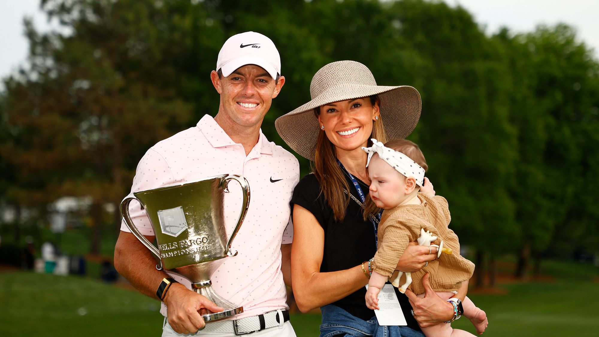

About Rory Mcilroy
Rory Mcilroy was born May 4, 1989 and is from Northern Ireland. He has been playing golf since he was two years old, eventually going pro at 18.
Rory is married to Erica Stoll and has a daughter named Poppy.
Besides golf, Rory enjoys watching Soccer and Rugby and is a Manchester United Fan.
You can learn more about Rory here.

References:
“Rory McIlroy.” Wikipedia, Wikimedia Foundation, 11 Sept. 2022, https://en.wikipedia.org/wiki/Rory_McIlroy.
“W3Schools Free Online Web Tutorials.” W3Schools Online Web Tutorials, https://www.w3schools.com/.
Pgatour.com. “Rory McIlroy PGA Tour Profile - News, Stats, and Videos.” PGATour, https://www.pgatour.com/players/player.28237.rory-mcilroy.html.
Video 1
Video 2
Video 3
Video 4